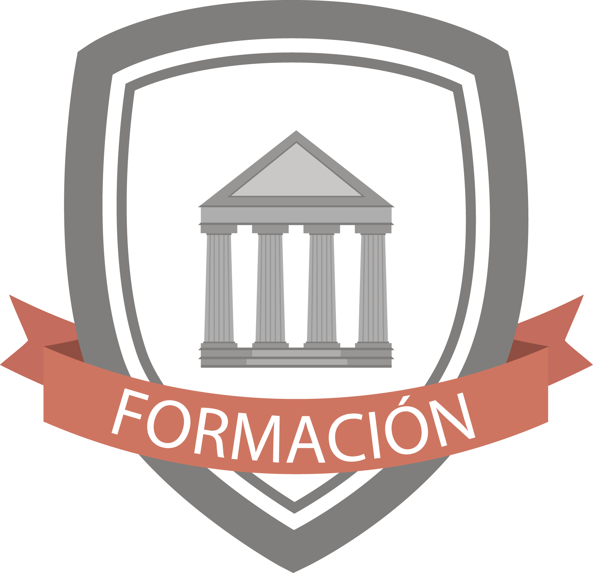

Pregrado | UTCH | 2006 – 2011
Ingeniero Teleinformático, SIG - Sistemas de Información Geograficos
Diplomado | UTCH | 2013-2014
Diplomado en Docencia Universitatia
Diplomado en Auditoria y Seguridad Informática
Cursos Complementarios
Arquitectura de Computadores
Linux: Sistema Operativo, Comandos y Utilidad
Planeación Estratégica de Proyectos
Aula Virtual Inteligente
Manejo de Adobe Photoshop CS3
Arquitectura, Mantenimiento y Reparación de Computadores
Bases de Datos Nivel I
Diseño de Páginas Web con Herramientas de Programación HTML
Desarrollo Web y Móvil con HTML5, CSS3 y JQuery
Modelado de Software con UML
Corporación Nacional Para El Desarrollo Del Choco
InnovaTICs
Universidad Tecnológica Del Choco - Diego Luis Cordoba
Mundo System.com
Fundación Chocolate
Universidad Cooperativa De Colombia - Sede Quibdó
Corporacion Minchita
FreylySIG
MAKAIA